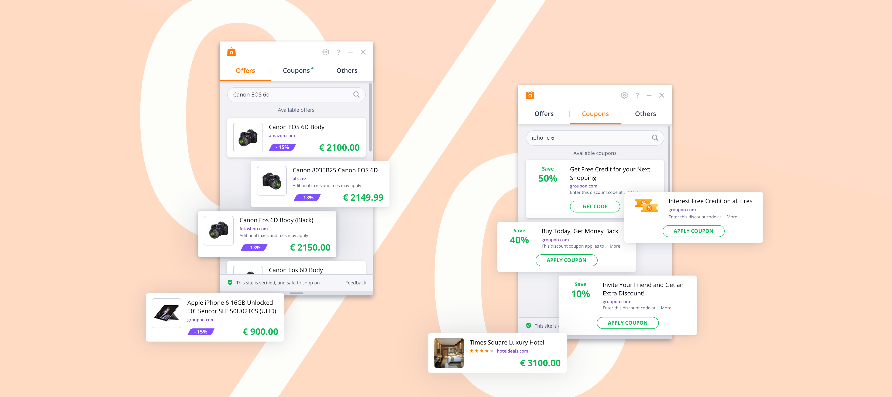
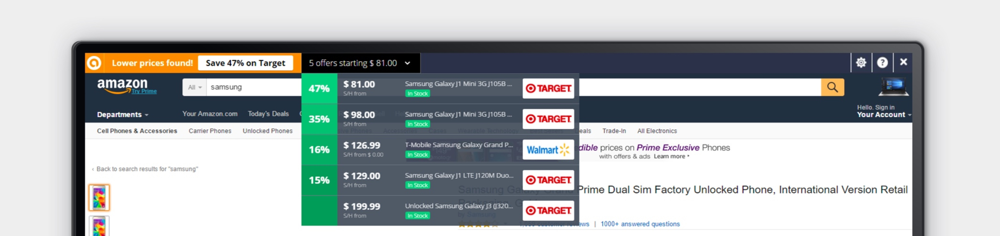
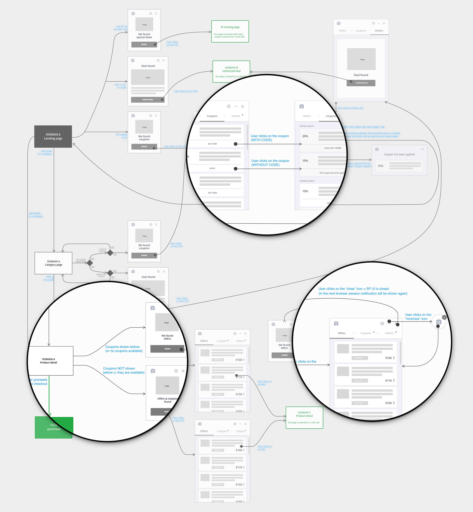
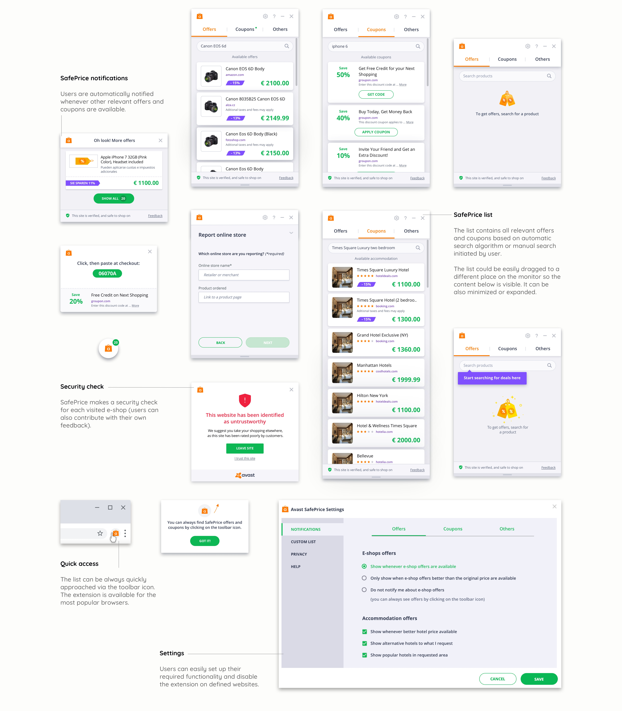
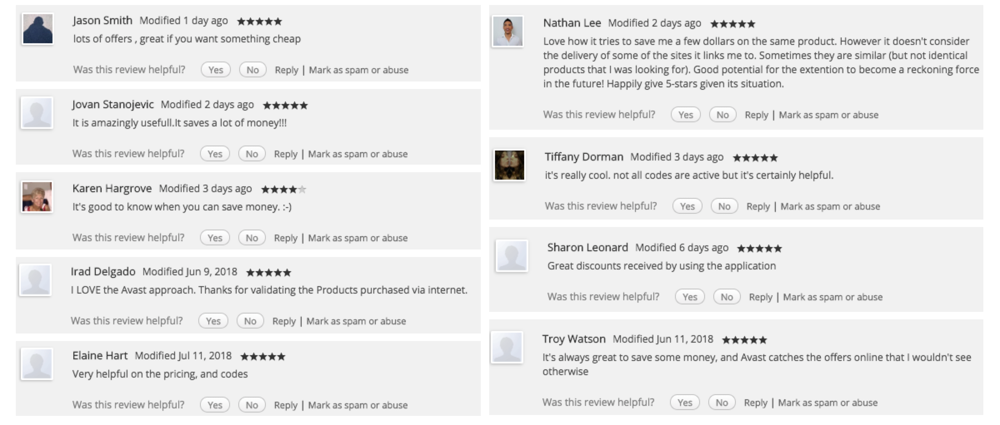

SafePrice is an e-commerce tool available as a browser extension (offered for the most-used browsers). The extension helps users find better deals, better price offers or discount coupons on various e-shop websites, including the most favorite sites on the e-commerce market and save them money.

Following my non-disclosure agreement, I did not include confidential information or somehow changed its actual meaning. Moreover, the information in this article is fully my own and does not reflect the views of Avast in any way.
My role in the project
The extension had been available for about two years when I joined the team and the results regarding the most important KPIs (e. g. churn rate) were not meeting the set goals at this time. I got the responsibility of the user experience redesign while all business-related requirements and consequences were solved together with our e-commerce experts. My design colleague mastered the illustrations that significantly helped to increase the product quality. All steps and design directions were frequently discussed with the product and development team (an international team based in different places) and validated in a few usability tests together with the UX research team in Avast.
Where was the problem?
I started with a detailed analysis of the user flows of the previous version (this version was my start point in this project) to better understand the user journey and its weak points. Although the application should have given a relatively simple service (i.e., shows some relevant offers or discount coupons), the flow was sometimes quite confusing or misleading, which was especially an issue with discount coupons that were sometimes repeatedly shown to users at wrong moments and users did not know how and when to use them. This often caused user frustrations and uninstalls of the extension.

The old version of the SafePrice browser extension.
The challenge
The main outcome of this analysis was the fact that the user flow would be a key problem to be solved and its redesign could significantly help to both improve the usability of the app and subsequently meet our business goals.
We also decided that major visual redesign of the user interface is needed as its structure was relatively complex and visually not well balanced, and some interaction signifiers were not as clear.
Design process
The findings from the user-flow analysis, user research, usability tests and competitors analysis was a nice start point to its redesign. We started with a short design workshop where we summarized all requirements for the extensions and figured out the must-have features and parts that must be improved with the whole team (using the modelled user journey).
With all the information in my mind, I started with sketching the user-flow improvements and together, with my colleague, we also researched possible user-interface solutions. We needed to cover many types of offers and coupons (that are available on supported sites), so the main goal was not to overload users with too many intrusive notifications. We must carefully think about the right moments in the user flows where the benefit of using the extension would be worth it for users.

Final user flow diagram based on the previous analyses and A/B tests (intentionally blurred).
I created several versions and modifications of the user flow which were discussed with our product manager and business experts (in terms of our business goals) and with developers (to approve the technological solution and its constraints). The final user flow design considered the following main aspects (some details on the diagram above are intentionally blurred):
1) I focused on the frequency of showing the notifications (I set up conditions when each type of notification could be shown) which would decrease the app’s intrusiveness. The algorithm also considered past effectiveness of particular e-shops (and their discount coupons) or user’s feedback and prioritize their occurance.
2) Another important goal was identifying the right moments of showing all of the different notification types (for example, coupon codes must be visible and available at checkout). I believed these design aspects would build a better engagement to our users and give them a feeling that the extension is really about helping them in their shopping activities (and not for pushing lots of offers and coupons without any logic to them).
3) Users should have some possibility to prioritize their preferences and set up which notifications should be shown and when they should be shown (using extension’s settings).
4) Users should have a possibility to actively use the extension whenever needed, i. e. intentionally search for desired deals and coupons. This shall cover a strong use case we acknowledged during the research phase.
Final outputs
Once the user flow was ready and approved by the team, we started with finalizing the user interface based on the ideas researched in previous phases (the visual style was following pattern library finalized by Lukas Dubay, we both designed UIs, animations and some visual details). We wanted to have the user interface more playful and lighter than the previous version. This was also an important task for copywriters to have all of the texts in kind of informal and casual language style. The design style was highlighted with illustrations and animations which also helped attract the user’s attention. The gallery below shows some selected final user-interface elements.

Results validation
It was quite tricky to flexibly validate our designs with our real users, as we needed to use some real e-commerce data which could make sense to them during the test. This was the reason I did only a bunch of simple interactive prototypes which were used for several formative tests. This helped me to validate the flow and used interaction patterns.
We iterated our designs based on the previous analyses and usability test results until we reached the first live extension build. As we had agreed and scheduled this approach with our team in advance, there was still some time to implement some improvements before the planned launch date. We were able to fix a few user-flow discrepancies, rewrite some copy ambiguities, and also make some interaction patterns in a more natural way (adding some easing and delays and others).
Moreover, we also conducted some multivariate tests before the actual release using a group of our users (both power and less-experienced users) where we tested a few different flow approaches and user-interface variants. This test helped us (based on results discussed with our data analyst) decide some last issues and find the best possible version which we shipped to our users.

We have got lots of new user feedback on the redesigned extension (example above is taken from Google Chrome store) and also conducted final usability tests - based on this experience we assumed that the redesign helped a lot and the user satisfaction rapidly improved (the users' rating on the Chrome store increased from 3.4 to 4.2 in 4 months). The redesign helped in a better user engagement that was continuously visible on our metrics as well, and eventually lead also to revenue growth.
Lessons learnt
The e-commerce market is quite different from what I had experienced before. User feedback and data showed us that it is extremely important to put an emphasis on the usability of the product. Frustrated users escape really quickly and it is quite tough to get them back; a much better (in fact, the only) way is to build up an experience which is not annoying in any way and available whenever needed (even if you need to omit some possibly useful features that would help users but, at the same time, overload the perceivable content).
This balancing on the edge of what is giving a value to our users without being annoyed and what is good enough to meet the set business goals was the most exciting moment of the whole project. Work on this project reminded me again the validity of the saying “look before you leap” because users would hardly forgive slips. I'm really happy that I could contribute to this successful project and eventually helped to reach the set goals.
← BACK TO PROJECTS